SmartTools Add-on Manual
SmartSculpt Suite Manual
Version 1.0.0 / November 19, 2026 / For Blender 5.1.2
SmartSculpt Suite is an add-on that brings sculpt preparation, brush switching, remeshing (rebuilding the faces), masks, face sets, mesh checking and repair, and snapshots (saved intermediate shapes) together in the Sidebar of the 3D Viewport. It also includes Edit Mode Sculpt Only, which lets you move the shape like a brush while staying in Mesh Edit Mode. Every section header is collapsible. Open only the section headers you need. Click the "?" help button on each section header to see its explanation.
1. What This Add-on Does
An add-on that gathers sculpting tools (for shaping forms like kneading clay) in the "Smart Sculpt" tab of the Sidebar, so you can refine shapes with brushes and filters even while staying in Mesh Edit Mode.
- Switch between the brushes used most often in sculpting (Draw, Clay, Grab, Smooth, and more) with a single button.
- Save your favorite brushes in three slots and recall them later.
- Switch how the 3D Viewport looks between Clay View, Technical View, Face Set View, and Wireframe View. You can also check the outline with a silhouette (a shadow-like display).
- Adjust the fineness and layout of faces with Dynamic Topology, Voxel Remesh, QuadriFlow, and Multires.
- Separate parts of the mesh with mask extraction and slicing, and with face set operations.
- Create base shapes and parts with primitives, booleans, rail cutters, sphere chains, curve tubes, scattering, and more.
- Analyze the mesh and fix it all at once with Apply Scale, Recalculate Normals, Delete Loose Geometry, and more.
- Keep the shape from before a big change with snapshots and recovery backups, and go back to it later.
- Work with brush-like deformation, mesh filters, masks, face sets, and vertex colors while staying in Mesh Edit Mode.
- Export and import the mesh to exchange it with external tools.
- Quickly set up the view and brushes before you start sculpting.
- Keep a backup with a snapshot before remeshing or booleans.
- Check and fix mesh problems all at once before exporting.
- Lightly smooth or build up only the selected part in Mesh Edit Mode.
At a Glance
This is how the screen changes when you use this add-on. Chapter 5 walks through the exact steps in the "Example" boxes for each feature.
ExampleSmooth a Rough Surface While Staying in Edit Mode(demonstrated on a subdivided Suzanne)
"Smooth" in "Mesh Filters" applies smoothing to the selected vertices repeatedly to even out the bumps. You can use it without entering Sculpt Mode.
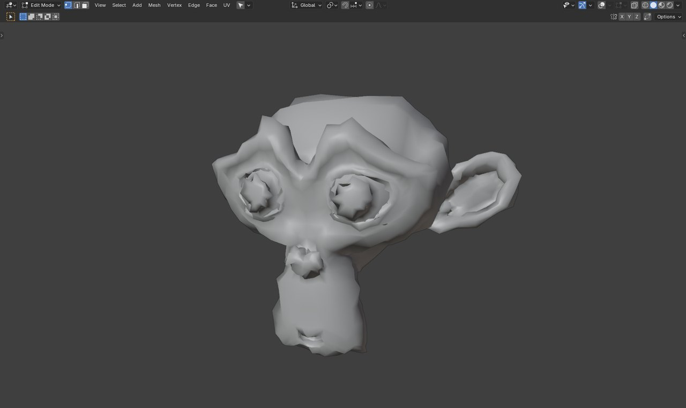

- Select Suzanne, enter Edit Mode, and select all vertices.
- In "Edit Mode Sculpt Only", set "Iterations" to 10 and "Strength" to 0.8.
- Click "Smooth" in "Mesh Filters".
What to look for: The roughness disappears from the surface, leaving a smooth shape. Because the surface is evened out, shapes such as the ears become slightly smaller. You can do this in Edit Mode without entering Sculpt Mode.
2. Key Features
This chapter walks through the features unique to this add-on, using numbered callouts on each figure. The numbers in a figure match the numbered list below it. Click a figure to enlarge it. Each individual setting is described under its own heading in Chapter 5.
2-1. Edit Mode Sculpt OnlyTop Selling Point
Normally, you switch to Sculpt Mode to smooth or build up a shape. Edit Mode Sculpt Only lets you use filters such as Smooth, brushes that you stroke over the 3D Viewport, masks, face sets, vertex colors, and symmetrize on the selected vertices (or the visible vertices if nothing is selected), all while staying in Mesh Edit Mode. You can keep selecting vertices and adjusting the shape without going back and forth between modes. The two images below show the state before and after selecting all vertices in Edit Mode and clicking Smooth with iterations 10 and Strength 0.8.
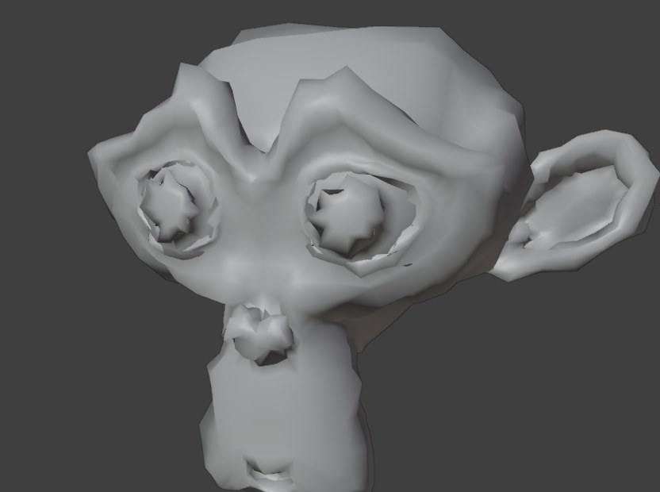
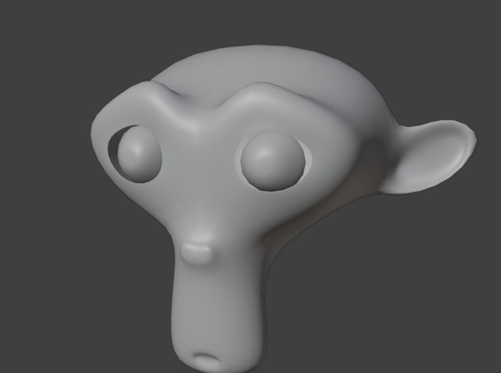
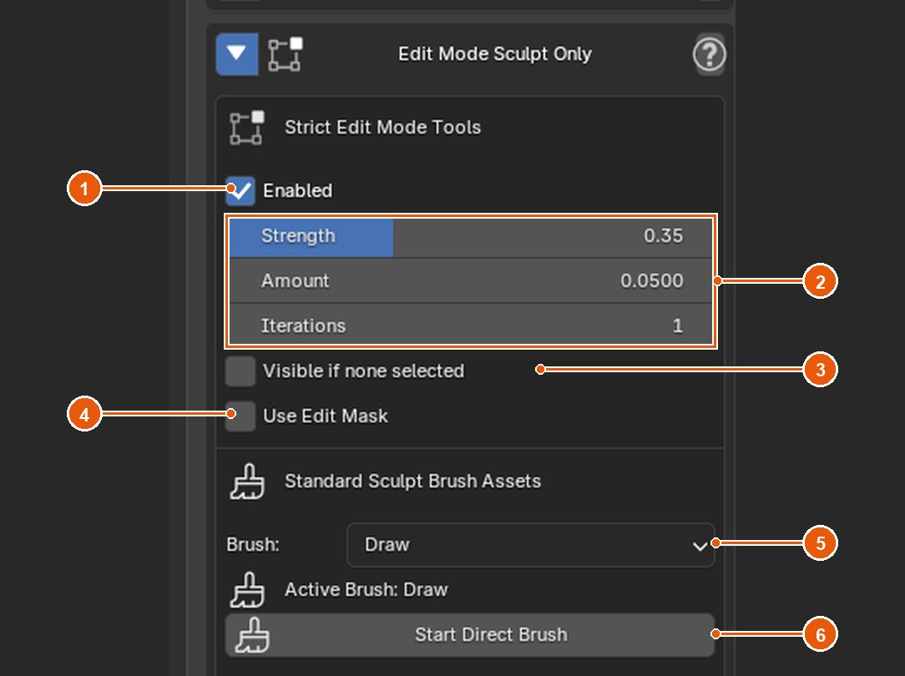
- 1Enabled: Makes the tools of this section header usable. While off, the buttons in the boxes below cannot be clicked
- 2Strength / Amount / iterations: The strength of filters and similar effects, the amount of movement, and the number of repetitions
- 3Visible if none selected: When nothing is selected, targets all the visible vertices
- 4Use Edit Mask: Keeps masked vertices from moving
- 5Brush: Selects the brush to stroke over the 3D Viewport (Draw in the figure)
- 6Start Direct Brush: Click it to move the shape by stroking over the 3D Viewport. It does not enter Sculpt Mode
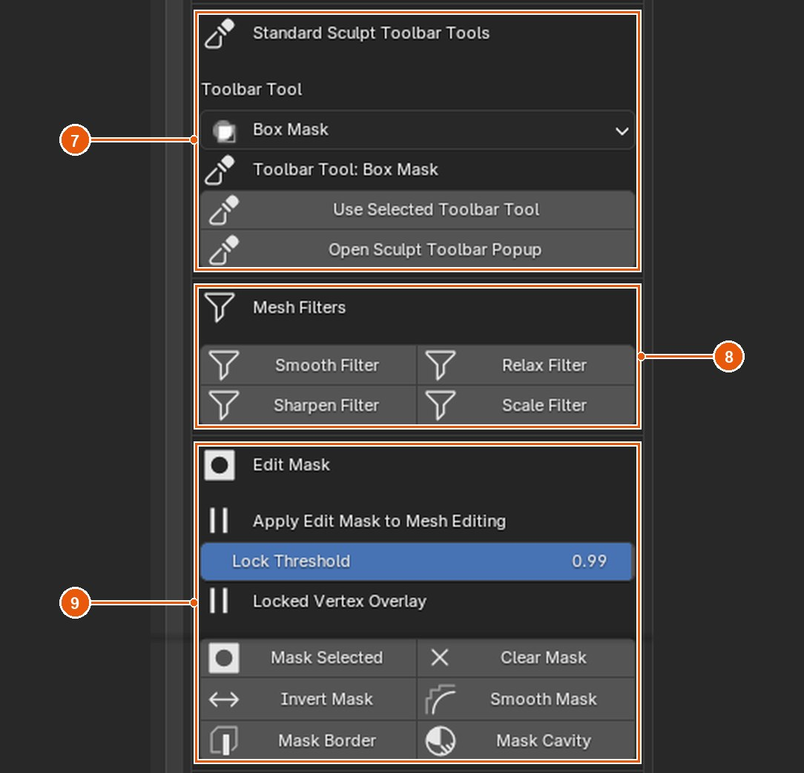
- 7Standard Sculpt Toolbar Tools: Select a tool such as Box Mask and start it with Use Selected Toolbar Tool. Set the area by dragging or clicking
- 8Mesh Filter: Applies Smooth, Relax, Sharp, and Scale to the selected vertices all at once. The two images above use Smooth
- 9Edit Mask: Adds, removes, inverts, or blurs the mask on the selected vertices. Vertices whose mask value is at or above Lock Threshold (0.99 at first) do not move
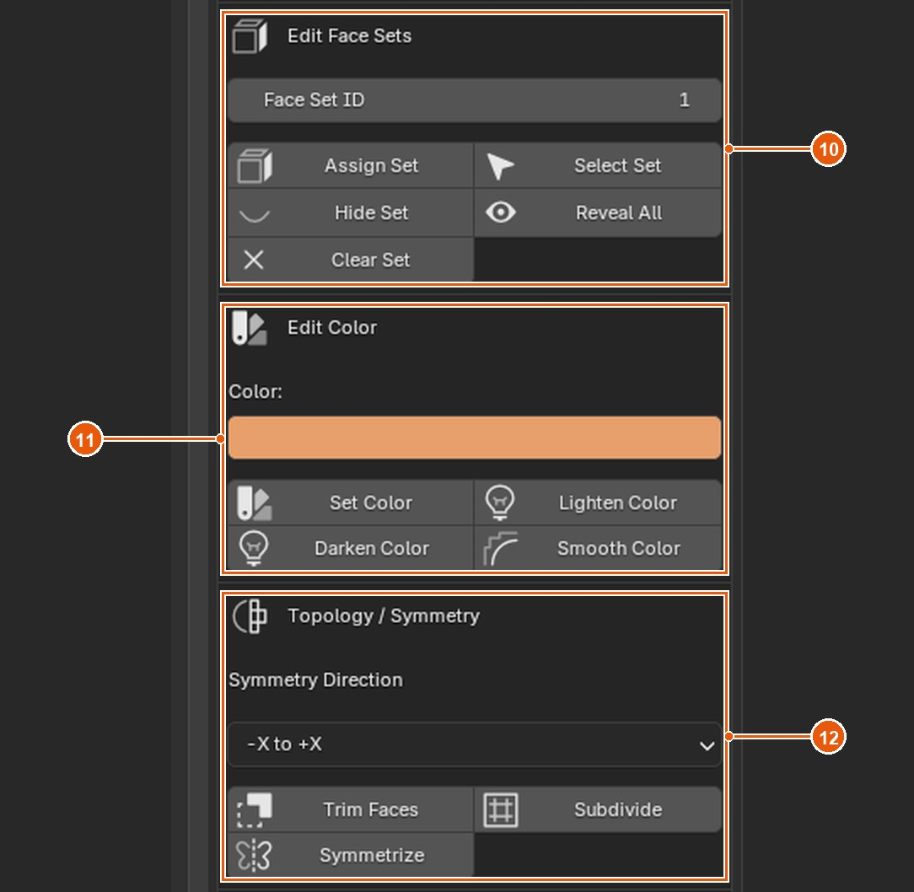
- 10Edit Face Sets: Makes the selected faces part of the face set (group of faces) with the number in Face Set ID. You can also select or hide the faces with that number
- 11Edit Color: Paints vertex colors on the selected part. You can also lighten, darken, or blur
- 12Topology / Symmetry: Trim Selected Faces, Subdivide Selected Edges, and Symmetrize. Choose the direction to copy with Symmetry Direction
- Select a mesh and enter Mesh Edit Mode (when you are not in Edit Mode, the Enter Mesh Edit Mode button appears).
- Make sure Enabled at ① is on, and select the vertices you want to move.
- Set the strength of the effect at ②, then click a Mesh Filter button at ⑧. To move the shape by stroking, select a brush at ⑤ and click ⑥ Start Direct Brush.
- For areas you do not want to move, add a mask at ⑨ and turn on ④ Use Edit Mask.
- Keys while using a brush: left button to stroke, Ctrl to invert, Shift to smooth, F for radius, Shift+F for strength, Esc or right button to stop.
- If you also turn on Edit Mask Lock in Always-on Toggle in addition to ④ Use Edit Mask, masked vertices return to their original positions even during ordinary edits such as move, rotate, and scale.
- Shortcuts are not registered automatically. Copy the ID from Keymap Registration IDs at the very bottom and register it yourself in Preferences > Keymap > 3D View > Mesh > Mesh Edit Mode.
Settings in detail: 5-2. Edit Mode Sculpt Only, 5-3. Standard Sculpt Brush Assets (inside Edit Mode Sculpt Only), 5-5. Mesh Filter (inside Edit Mode Sculpt Only), 5-10. Keymap Registration IDs and Standard Sculpt Compatibility (inside Edit Mode Sculpt Only)
2-2. Snapshots and Recovery BackupsSee It in Figures
Remeshing, booleans, slicing, and similar operations rebuild the original faces, and you cannot go back to the original mesh pattern afterward. If you keep the current shape with Save Snapshot, you can go back with Restore Snapshot even after a big change. Even if you forget to save, Recovery Backups (on from the start) automatically creates one backup per object before remeshing, booleans, fixes, UV overwrites, slicing, and so on. The three images below compare how the mesh pattern changes in the order of save, Voxel Remesh, and restore.

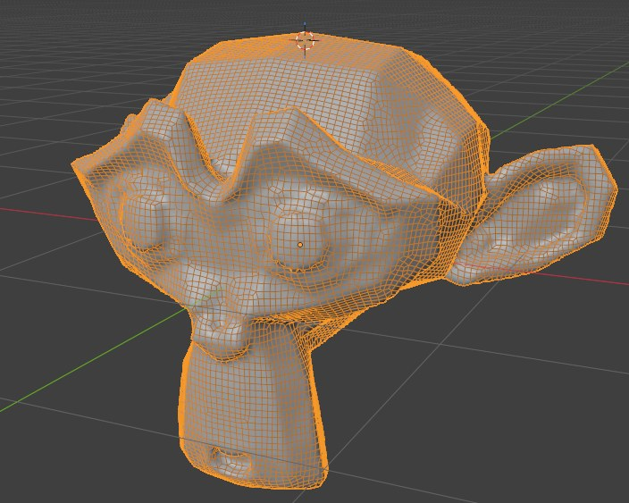

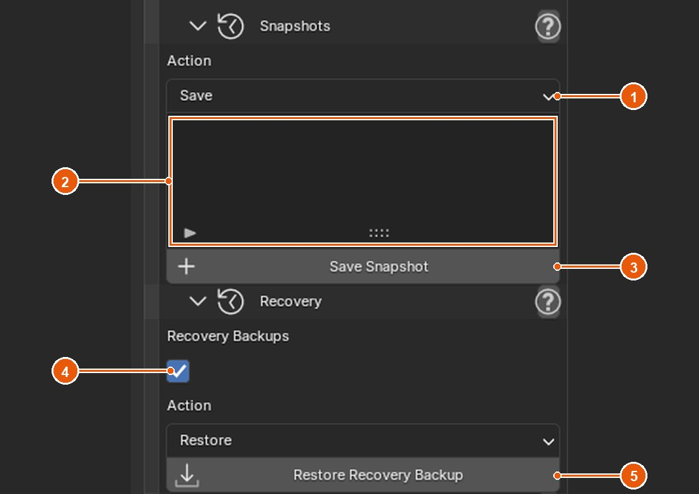
- 1Action: The button for the selected action appears below (Save in the figure). Switches between save, restore, preview, and delete
- 2Snapshot List: The saved snapshots are listed (still empty in the figure). Restore, preview, and delete apply to the one selected here
- 3Save Snapshot: Keeps the current shape
- 4Recovery Backups: On from the start. Automatically creates a backup before operations that rebuild the original faces
- 5Restore Recovery Backup: Appears when Action is Restore (the starting value). Click it to go back to the automatically created backup
- Before remeshing or booleans, click ③ Save Snapshot in Snapshot under Save / I/O.
- When you want to go back, switch the button to Restore Snapshot with Action at ①, select one in the list at ②, and click it.
- If you forgot to save and ④ is on, go back to the automatic backup with ⑤ Restore Recovery Backup.
- There is one recovery backup per object. Save shapes you want to keep as snapshots.
- Preview Snapshot lets you compare against the saved shape (end it with Clear snapshot preview).
- Cleanup Generated Data in Transfer / Cleanup also clears snapshots only when Include Snapshots is on.
Settings in detail: 5-18. Save / I/O
2-3. Mesh Analysis, Repair, and ReadinessSee It in Figures
Checks and fixes mesh problems all at once before heavy processing or export. Analyze finds the problems, and Fix applies the checked repairs together. Live Mesh Readiness shows a score out of 100 and the action recommended for that mesh. The two images below show a Suzanne with the faces on its right half flipped, before and after running Fix (with the default setting, Recalculate Normals).
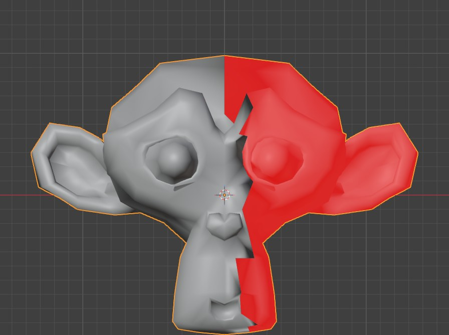

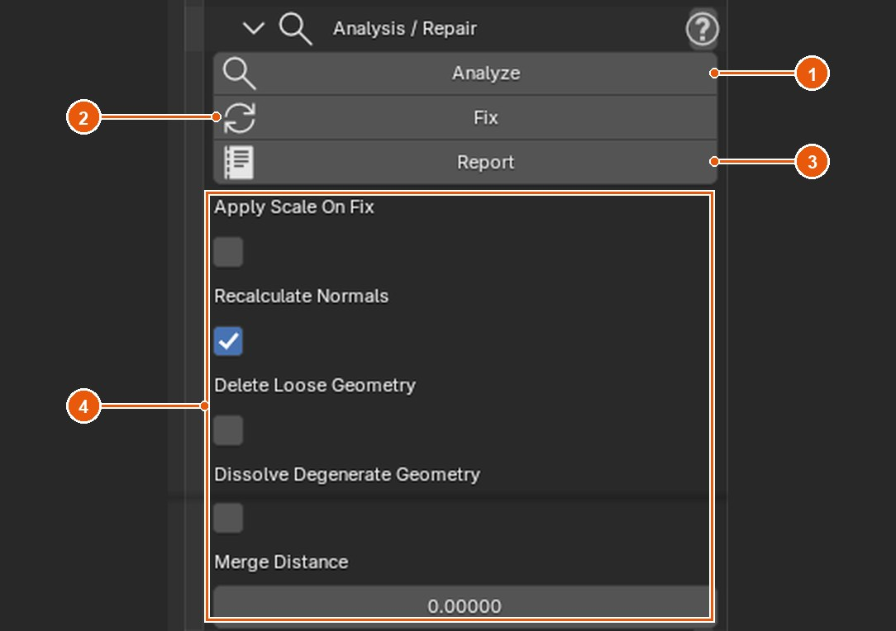
- 1Analyze: Inspects the mesh and shows the problems found. The score in the right figure is also produced here
- 2Fix: Applies the repairs chosen with the checkboxes below, all at once
- 3Report: Writes the inspection results to a Blender text
- 4Repair Options: Only Recalculate Normals is on at first. Apply Scale, Delete Loose Geometry, and Dissolve Degenerate Geometry can also be selected
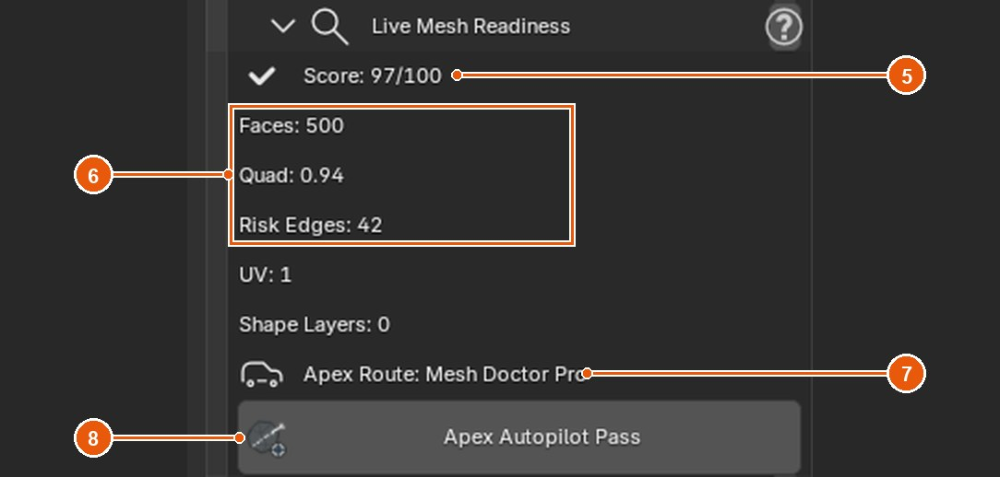
- 5Score: A guide out of 100 (97 in the figure). Before Analyze, it shows "Not measured"
- 6Faces / Quad / Risk Edges: The number of faces, the ratio of quad faces (1.00 means all quads), and the number of edges likely to cause problems
- 7Apex Route: The name of the action recommended for that mesh
- 8Apex Autopilot Pass: Examines the state of the mesh and runs the Smart Action that fits
- Select a mesh and click ① Analyze in Analyze / Repair. The list of problems appears, along with the score at ⑤ and the recommendation at ⑦.
- Choose the repairs at ④, then click ② Fix.
- If you are not sure which action fits, click ⑧ Apex Autopilot Pass.
- In the two images above, Face Orientation in the 3D Viewport overlays is turned on, so the flipped faces are shown in red.
- A recovery backup is also created before Fix, so you can go back to the state before the repair with Restore Recovery Backup.
Settings in detail: 5-16. Analyze / Repair, 5-17. Live Mesh Readiness (inside Analyze / Repair)
3. Getting Started
How to install the add-ons, how to change the interface language, and how the N panel and the "?" help buttons work in every add-on are covered in the "SmartTools Overall Specification". Please read chapters 2 to 5 there first.
| ZIP to install | SmartSculptSuite_1.0.0.zip |
|---|---|
| Name shown in Blender | Smart Sculpt |
| Supported Blender | 5.1.2 |
4. Where to Find It
The "Smart Sculpt" panel appears in the "Smart Sculpt" tab of the Sidebar (N panel) in the 3D Viewport. The panel is closed at first. For installation, Japanese localization, how to open the N panel, and the common way to use the "?" help button, see the common chapter of the SmartTools Overall Specification.
| Editors | 3D Viewport |
|---|---|
| Tab | Smart Sculpt |
| Mode | Mainly used in Sculpt Mode and Object Mode. Edit Mode Sculpt Only is used in Mesh Edit Mode. |
- Hover the mouse over the 3D Viewport and press N to open the Sidebar (see the SmartTools Overall Specification for details).
- Click "Smart Sculpt" among the tabs along the right edge of the Sidebar.
- Click the header of the "Smart Sculpt" panel to open it.
- Click a section header inside (such as "Viewport" or "Brush") to open its contents.
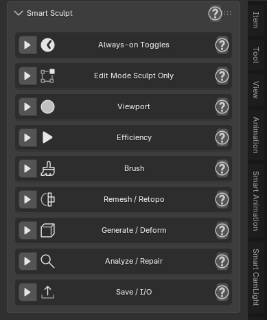
5. Features
Each heading is explained in order from the top of the panel. Click the "?" to the right of a heading to show the same explanation in Blender. The blue "Example" boxes show real operations on simple models such as Suzanne, with the 3D Viewport before and after.
5-1. Always-on Toggle
The section header at the very top of the panel (marked with a clock icon). Turn on or off only the features that need to keep running all the time here. Ordinary tools run only when you click their buttons.
LocationAt the top of the "Smart Sculpt" panel
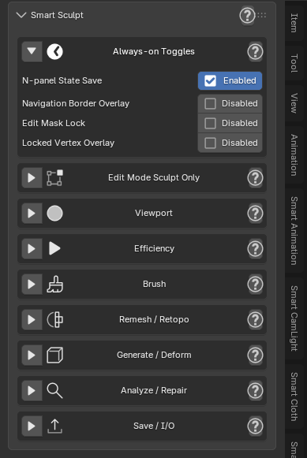
| Item | What it does |
|---|---|
| N-panel State Save | On from the start. While on, every change to an N panel setting is saved immediately, and the settings are restored when Blender starts or when you switch scenes. When off, settings are saved only when the current scene is closed or when Preferences are saved. |
| Boundary Overlay | Keeps the guide to the navigation (view movement) boundary displayed on screen. Turn it on only when you need it. |
| Edit Mask Lock | While you use the edit mask of Edit Mode Sculpt Only, keeps watching to make sure masked vertices do not move. Turning it off stops the watching immediately. |
| Locked Vertex Overlay | Keeps showing the vertices locked in place as colored dots in the 3D Viewport. Turning it off stops the display immediately. |
5-2. Edit Mode Sculpt Only
The section header for sculpt-like operations while staying in Mesh Edit Mode. Without switching modes, it moves the selected vertices or the visible vertices. Only this section header is open from the start. Inside, it is divided into the boxes described below (such as Strict Edit Mode Tools and Standard Sculpt Brush Assets). The first box is Strict Edit Mode Tools.
Location"Smart Sculpt" panel > "Edit Mode Sculpt Only" > "Strict Edit Mode Tools"
| Item | What it does |
|---|---|
| Enter Mesh Edit Mode | A button that appears when you are not in Mesh Edit Mode. Click it to put the selected mesh into Edit Mode. |
| Enabled | Makes the tools of this section header usable. While off, the buttons in the boxes below cannot be clicked. |
| Strength / Amount / iterations | The strength of filters and similar effects, the amount of movement, and the number of repetitions. |
| Visible if none selected | When nothing is selected, targets all the visible vertices. |
| Use Edit Mask | Keeps masked vertices from moving. |
5-3. Standard Sculpt Brush Assets (inside Edit Mode Sculpt Only)
Brushes that move the shape when you stroke directly over the 3D Viewport in Mesh Edit Mode. They do not enter Sculpt Mode.
LocationThe "Standard Sculpt Brush Assets" box inside "Edit Mode Sculpt Only"
| Item | What it does |
|---|---|
| Brush | Selects the brush to use. The selected brush is shown in Active Brush. |
| Start Direct Brush | Click it to start using the brush by stroking over the 3D Viewport. |
| Brush Settings | A box for setting Radius, Brush Strength, Brush Amount, Direction, Spacing, Falloff (how the effect weakens from the center outward), Hardness, Normal Radius, Auto Smooth, Accumulate, Plane Offset, Front Faces Only, Stabilize Stroke, Input Samples, Pressure Radius, Pressure Strength, Strength Hotkeys, Strength Step, and more. With Accumulate on, the effect builds up within the same stroke. Increasing Input Samples makes the line less likely to break up when you stroke quickly (at the cost of more load). With Strength Hotkeys on, you can raise or lower the strength by Strength Step with keys only while using the brush. |
| Open Brush Asset Popup | Opens the list of brushes in a small window. Click an icon to select a brush. |
| Move Offset / Pose Axis / Pose Angle | The movement amount of the brush that moves the shape, and the axis and angle for bending with Pose-type brushes. |
5-4. Standard Sculpt Toolbar Tools (inside Edit Mode Sculpt Only)
A box for using tools such as those that apply masks or face sets to a region you enclose, in Mesh Edit Mode.
LocationThe "Standard Sculpt Toolbar Tools" box inside "Edit Mode Sculpt Only"
| Item | What it does |
|---|---|
| Toolbar Tool | Selects the tool to use. |
| Use Selected Toolbar Tool | Starts the selected tool. For tools that define an area, drag or click with the left button to set the area, and stop with Esc or the right button. Tools that do not define an area run immediately when you click. |
| Open Sculpt Toolbar Popup | Opens the list of tools in a small window. Click an icon to select that tool and start using it right away. |
5-5. Mesh Filter (inside Edit Mode Sculpt Only)
Smooths or tidies all the target vertices at once. The target is the selected vertices (or, if "Visible if none selected" is on and nothing is selected, all the visible vertices).
LocationThe "Mesh Filter" box inside "Edit Mode Sculpt Only"
| Item | What it does |
|---|---|
| Smooth | Repeats smoothing (a process that evens out the surface) to make the surface smooth. |
| Relax | Tidies the arrangement of vertices while keeping the thickness of the shape as much as possible. |
| Sharp | Makes bumps and dents more distinct. If set too strong, spikes can appear. |
| Scale | Makes the selected part larger or smaller from its center. |
ExampleSmooth a Rough Surface While Staying in Edit Mode(demonstrated on a subdivided Suzanne)
"Smooth" in "Mesh Filters" applies smoothing to the selected vertices repeatedly to even out the bumps. You can use it without entering Sculpt Mode.
- Select Suzanne, enter Edit Mode, and select all vertices.
- In "Edit Mode Sculpt Only", set "Iterations" to 10 and "Strength" to 0.8.
- Click "Smooth" in "Mesh Filters".
What to look for: The roughness disappears from the surface, leaving a smooth shape. Because the surface is evened out, shapes such as the ears become slightly smaller. You can do this in Edit Mode without entering Sculpt Mode.
5-6. Edit Mask (inside Edit Mode Sculpt Only)
Adds or removes masks (marks that keep vertices from moving) in Mesh Edit Mode.
LocationThe "Edit Mask" box inside "Edit Mode Sculpt Only"
| Item | What it does |
|---|---|
| Apply Edit Mask to Mesh Editing | Shows with an icon whether "Edit Mask Lock" in "Always-on Toggle" is on. When it is on and "Use Edit Mask" is also on, masked vertices return to their original positions even during ordinary edits such as move, rotate, and scale. |
| Lock Threshold | Vertices whose mask value is at or above this value are treated as locked vertices. It starts at 0.99, so only vertices masked almost completely are targeted. |
| Locked Vertex Overlay | Shows with an icon whether "Locked Vertex Overlay" in "Always-on Toggle" is on. |
| Locked Vertex Color / Locked Vertex Size | Appear when "Locked Vertex Overlay" is on. The color and size of the marks. |
| Mask Selection | Adds a mask to the selected vertices. |
| Clear Mask / Invert Mask | Removes the mask. Swaps the masked and unmasked areas. |
| Blur the mask | Smooths the boundary of the mask. |
| Mask Border / Mask Cavity | Adds a mask to the edges of the mesh and to areas with bumps and dents. |
5-7. Edit Face Sets (inside Edit Mode Sculpt Only)
Works with face sets (groups of faces, told apart by color) in Mesh Edit Mode.
LocationThe "Edit Face Sets" box inside "Edit Mode Sculpt Only"
| Item | What it does |
|---|---|
| Face Set ID | The number of the face set to operate on. |
| Assign Set | Makes the selected faces part of the face set with that number. |
| Select Set | Selects the faces of the face set with that number. |
| Hide Set / Reveal All | Hides a face set. Shows everything that was hidden again. |
| Clear Set | Removes the face set. |
ExampleGroup the Faces on Top of the Head and Hide Them Together (Assign Set and Hide Set)(demonstrated on Suzanne)
"Assign Set" turns the selected faces into a face set, and "Hide Set" hides only that group. This is useful when you work on areas behind overlapping parts.
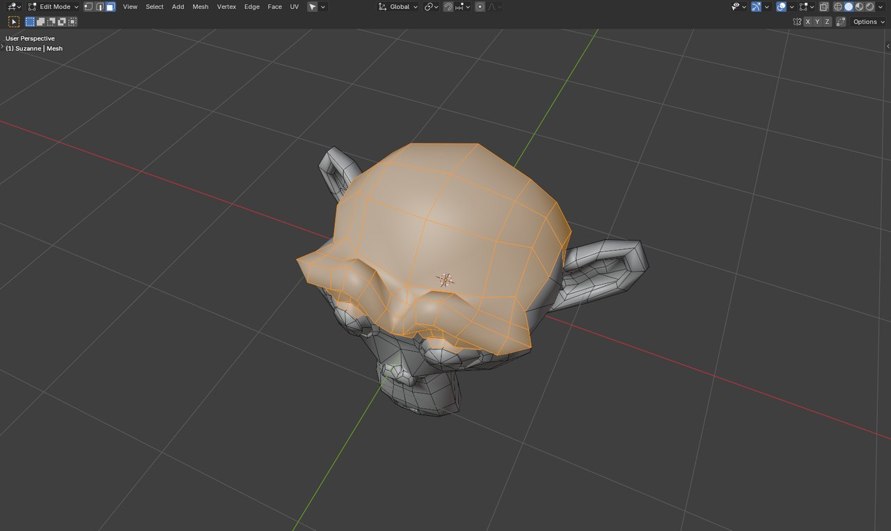
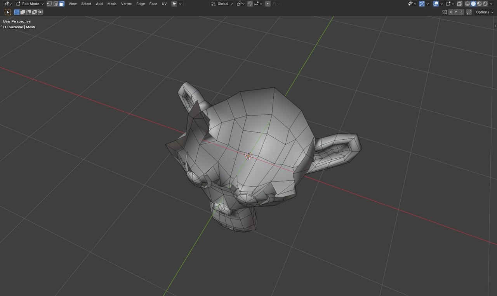
- In Edit Mode on Suzanne, select the faces on top of the head.
- In "Edit Face Sets", set "Face Set ID" to 2 and click "Assign Set".
- Click "Hide Set". You can bring the faces back with "Reveal All".
What to look for: Only the grouped faces on top of the head disappear, and you can see inside. Without reselecting, you can handle the same faces together by their number.
5-8. Edit Color (inside Edit Mode Sculpt Only)
Paints vertex colors (colors assigned to each vertex) in Mesh Edit Mode.
LocationThe "Edit Color" box inside "Edit Mode Sculpt Only"
| Item | What it does |
|---|---|
| Color | Selects the color to paint with. |
| Set Color | Applies that color to the selected part. |
| Lighten Color / Darken Color | Makes the current color lighter or darker. |
| Smooth Color | Smooths the boundaries between colors. |
ExamplePaint Color on Selected Faces While Staying in Edit Mode(demonstrated on Suzanne)
"Set Color" paints vertex colors on the selected faces. You can use it to color-code parts or as markers.
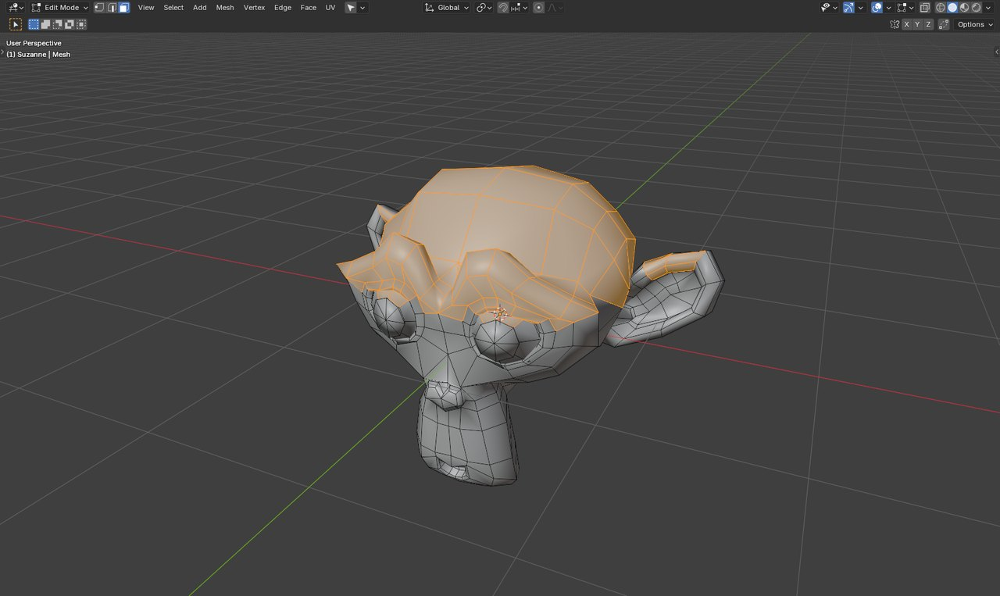
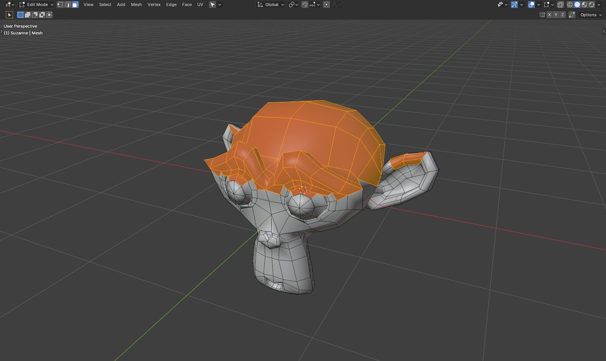
- In Edit Mode on Suzanne, select the faces on top of the head.
- Choose red in "Color" under "Edit Color".
- Click "Set Color".
- Set the shading color of the 3D Viewport to "Attribute" and check the result.
What to look for: The selected top of the head (including the upper edges of the ears) is painted red (because it is selected, the red appears blended with the selection color). You can paint in Edit Mode without switching modes.
5-9. Topology / Symmetry (inside Edit Mode Sculpt Only)
Operations for cutting faces, subdividing them, and making the left and right sides match.
LocationThe "Topology / Symmetry" box inside "Edit Mode Sculpt Only"
| Item | What it does |
|---|---|
| Symmetry Direction | Selects which side is copied to the other side. |
| Trim Faces | Trims the selected faces. |
| Subdivide | Splits the selected edges to make the faces finer. |
| Symmetrize | Copies the shape of one side to the other side to make the left and right match. |
ExampleCopy an Ear Fixed on One Side to the Other Side (Symmetrize)(demonstrated on Suzanne)
"Symmetrize" copies the shape of one side to the other side to make the left and right match.
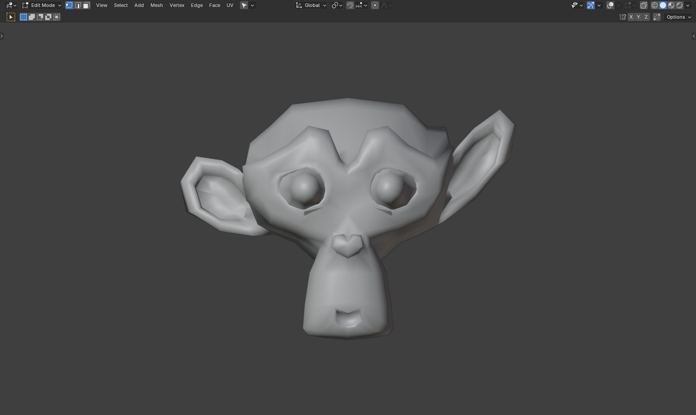
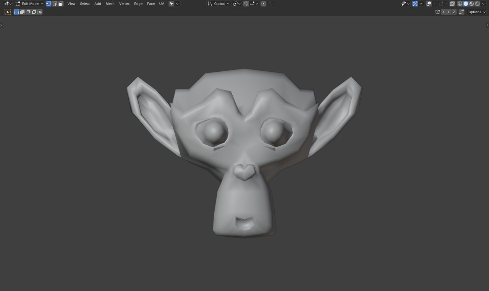
- In Edit Mode, change the shape of only one ear beforehand.
- In "Symmetry Direction" under "Topology / Symmetry", choose the direction that copies from the side you fixed to the opposite side (here, "+X to -X").
- Select all and click "Symmetrize".
What to look for: The ear that was raised on only one side is copied to the opposite side in the same way, and the left and right match.
5-10. Keymap Registration IDs and Standard Sculpt Compatibility (inside Edit Mode Sculpt Only)
A box for copying the names (operator IDs) used to register shortcut keys, and a box that checks whether Blender's standard sculpt features can be used in Edit Mode.
LocationThe "Keymap Registration IDs" and "Native Sculpt Compatibility" boxes inside "Edit Mode Sculpt Only" (at the very bottom)
| Item | What it does |
|---|---|
| Start Direct Brush Operator ID | The operation that starts the direct brush. The ID text is not shown in the box. Click the button on the right to copy the ID. |
| Brush Popup Operator ID / Toolbar Popup Operator ID | The operations that open the brush list and the tool list. Click the button on the right to copy the ID. |
| Native Sculpt Report | Checks whether Blender's standard sculpt operations can be used in the current Edit Mode, and reports the result. It does not switch modes. |
5-11. Viewport
Switches how the 3D Viewport looks to make shapes easier to see.
Location"Smart Sculpt" panel > "Viewport" > "Viewport Visibility" and "Viewport Popup"
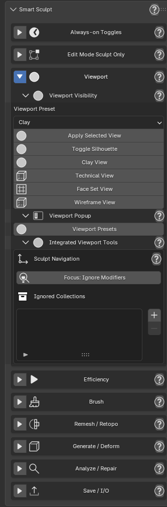
| Item | What it does |
|---|---|
| Viewport Preset | Selects a combination of looks. |
| Apply Selected View | Applies the look selected in "Viewport Preset". |
| Toggle Silhouette | Displays the shape in flat colors like a shadow so you can check the outline. Click again to go back. |
| Clay view / Technical view / Show Face Sets / Wireframe viewport | Switch to each look with a single button. |
| Viewport Presets | Found inside "Viewport Popup". Select a look from a small list. |
| Integrated Viewport Tools | The box at the very bottom inside "Viewport". It holds the exclusions for sculpt navigation focus. Click "Focus: Ignore Modifiers" to open the settings for modifiers ignored when focusing. Objects in collections added with "+" in "Ignored Collections" are excluded from focusing. It is closed at first. |
ExampleCheck the Outline with a Silhouette Display (Toggle Silhouette)(demonstrated on Suzanne)
"Toggle Silhouette" displays the shape in a flat color like a shadow, so you can check just the outline.
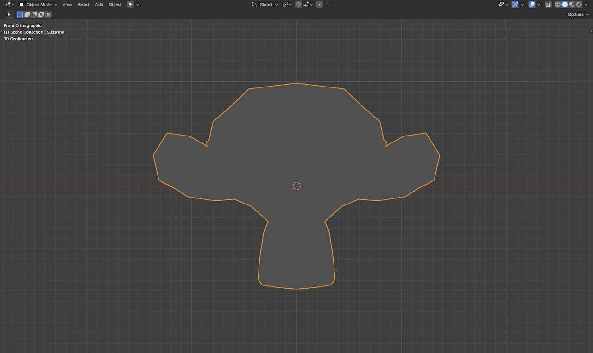
- Select Suzanne.
- Click "Toggle Silhouette" in "Viewport".
- Click it again to return to the original display.
What to look for: The shading disappears and the shape becomes a single-color shadow, making it easier to see the balance of the outline of the ears and head.
5-12. Efficiency
The section header that gathers work preparation, switching between multiple parts, calling frequently used menus, and managing sculpt sessions.
Location"Smart Sculpt" panel > "Efficiency"
| Item | What it does |
|---|---|
| Active Target | Shows the name, mode, and the number of vertices, edges, and faces of the selected mesh. |
| Workflow Launcher | Choose preparation, part switching, and so on in "Action", then run it with the button that appears below. At first "Prepare Workspace" is selected, and the button is "Run Core Setup". "Run Core Setup" sets up a display that is easy to sculpt in. There are also "Prepare Multi-Object", "Previous Part", "Next Part", and more. "Previous Part" and "Next Part" switch in order which of the selected meshes you work on. |
| Auto Enter Sculpt | On from the start. After you create something for sculpting, it automatically enters Sculpt Mode. |
| Quick Pie | Found inside "Direct Access". Runs brush switching for Draw, Smooth, Grab, and Pose, as well as Dynamic Topology, Voxel Remesh, Extract Mask, and Save Snapshot, from a round menu (pie menu). |
| Workflow Profiles | Found inside "Direct Access". Select a combination of settings suited to your work from a small list and apply it. |
| Smart Workflow | Runs the batch process selected in "Action" with "Run Selected Smart Action". Turning off "Live Metrics" hides "Live Mesh Readiness" in "Analyze / Repair". "Icon Size" is the button height of "Run Selected Smart Action" and "Apex Autopilot Pass" in "Analyze / Repair". Turning off "Smart Action Buttons" hides all the Smart Action button boxes inside each section header (such as "Workflow Smart Actions" and "Brush Smart Actions"). |
| Sculpt Sessions | Creates a working object that combines several selected meshes into one. When you choose "Create" or similar in "Action", the button below changes to "Create Sculpt Session", "Restore source objects", or "Close Sculpt Session". "Session Mode" is how they are combined. "Unified" joins the original meshes into one. "Proxy" joins them and then rebuilds the faces to make a light working shape. "Face Set Mode" is how face sets are divided when creating (it starts at "Loose", which divides by each disconnected part). With "Hide Originals" on (on from the start), the original meshes are hidden when the session is created. "Legacy Face Set Fallback" is a setting kept for compatibility with old scenes. |
| Workflow Smart Actions | A box lined with buttons for the batch processes (Smart Actions) related to that section header. Click one to run that process all at once. It is closed at first. |
ExampleHide the Smart Action Button Boxes to Shorten the Panel(demonstrated on Suzanne)
Turning off "Smart Action Buttons" hides all the "... Smart Actions" boxes inside each section header at once.
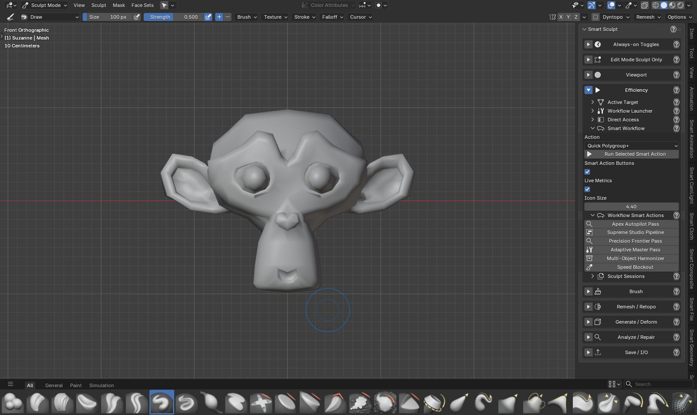
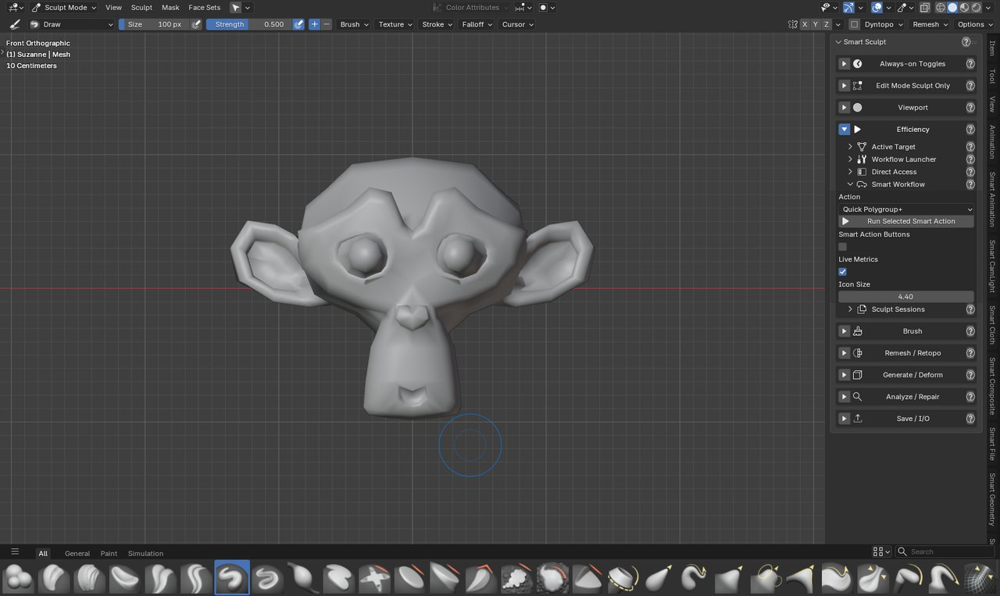
- Open "Smart Workflow" in "Efficiency".
- Turn off "Smart Action Buttons".
What to look for: When you turn it off, the "Workflow Smart Actions" box and its buttons disappear. The same applies to the "... Smart Actions" boxes in the other section headers.
5-13. Brush
The section header for selecting, saving, and recalling sculpt brushes. Filters that affect a wide area at once are also here.
Location"Smart Sculpt" panel > "Brush"
| Item | What it does |
|---|---|
| Quick Tool / Activate Tool | Found inside "Brush Tools". Select a brush and click "Activate Tool" to enter Sculpt Mode and switch to that brush. Some become a similar standard Blender brush ("Scrape" becomes Scrape/Fill, "Cloth" becomes Drag Cloth, and "Crease" becomes Crease Sharp). |
| Workflow Profiles / Apply Profile | Select a combination of settings suited to your work and apply it all at once. |
| Favorite Slot | Select slot 1 to 3. "Stored Brush" shows the brush in that slot. "Save" puts the current sculpt brush in, "Recall" brings it back, and "Clear Slot" empties it. |
| Quick Brushes | Switches between "Draw", "Clay", "Clay Strips", "Grab", "Smooth", "Scrape", "Pose", "Cloth", "Draw Sharp", and "Crease" with a single button. The radius and strength are also set to values that suit that brush. |
| Brush-like Filters | Set the "Strength" and deform a wide area at once. When you select "Mesh" or "Cloth" in "Filter Domain" at the top, only the items and Apply button for the one you selected appear in the panel. With "Mesh", "Apply Mesh Filter" tidies the surface using the process selected in "Mesh Filter". With "Cloth", "Apply Cloth Filter" deforms like cloth using the motion selected in "Cloth Filter" (such as gravity), keeping the edges from stretching. The cloth filter does not move masked or hidden vertices. With no mask, gravity pins the top edge. To pin a different place, mask it. |
| IMM / VDM / Layers | "Insert Multi Mesh" creates insertion parts near the mesh you are working on (set the type and arrangement with "IMM Part", "IMM Count", and "IMM Spacing"). "Create VDM Stamp" creates a mesh that serves as a mold for details such as wrinkles and grooves. "Run 3D Layer Action" and "Run Morph Target Action" use shape keys (a mechanism that stores differences in shape) to handle shape layers and corrective shapes. |
| Brush Smart Actions / Integrated Brush Tools | "Brush Smart Actions" is a box lined with buttons for the batch processes (Smart Actions) related to that section header. Click one to run that process all at once. It is closed at first. "Integrated Brush Tools" is a box of buttons that open the "Mask / Face Set Pie" (a round menu). The pie has four buttons, "Mask Tools", "Face Sets and Trim", "Filters and Extract", and "Transform and Visibility", and clicking one opens a small window gathering those tools. If you open it outside Sculpt Mode, it shows only "Open this menu in Sculpt Mode." |
ExampleDrape the Lower Half of a Sphere Like Cloth with Gravity (Cloth Filter)(demonstrated on a sphere)
"Apply Cloth Filter" deforms the whole mesh at once like cloth while keeping the edges from stretching. Masked areas do not move.
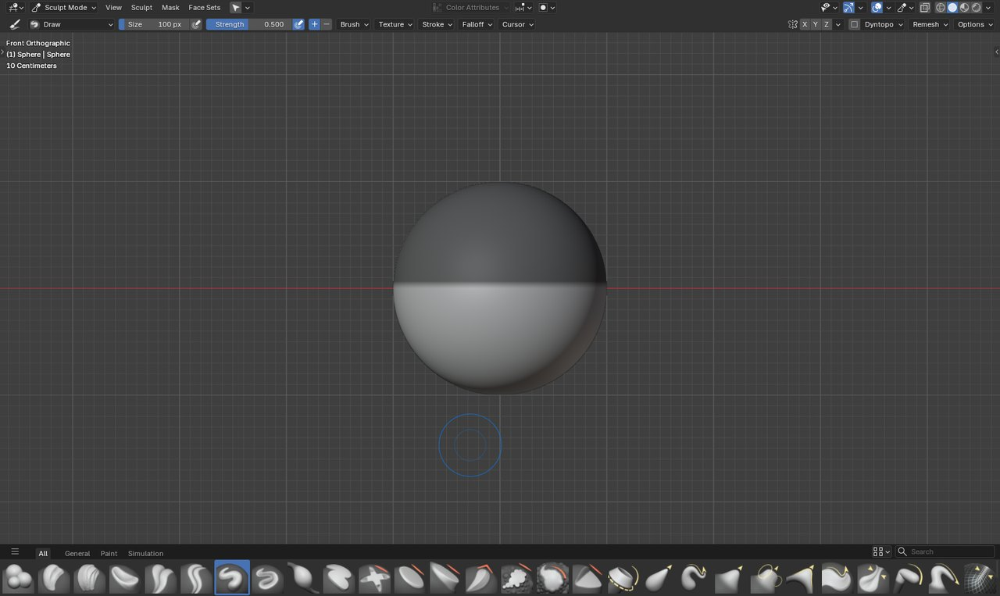
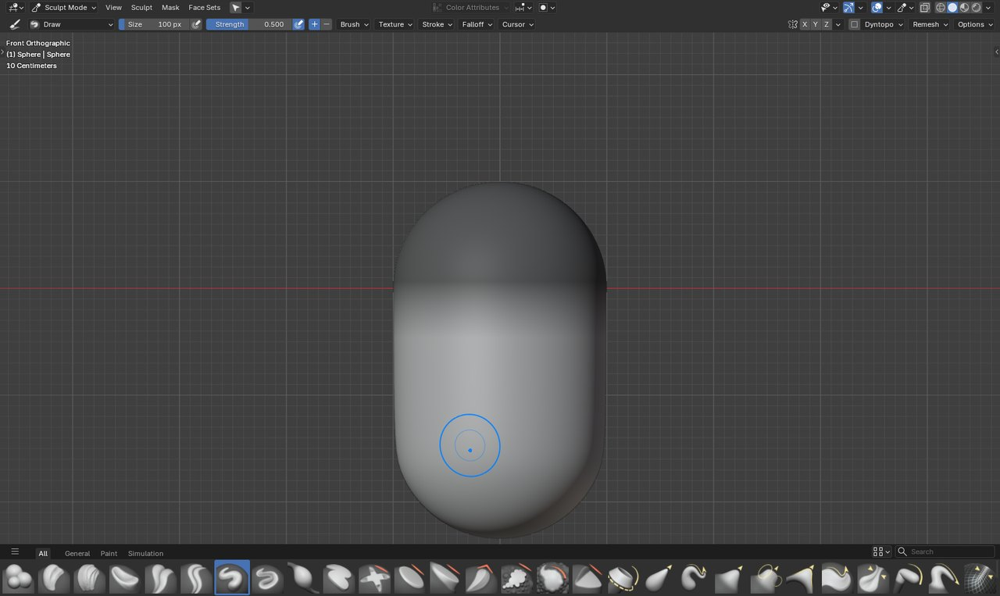
- In Sculpt Mode, draw a mask on the upper half that you want to keep in place.
- In "Brush-like Filters" under "Brush", set "Filter Domain" to "Cloth", "Cloth Filter" to "Gravity", and "Strength" to 1.0.
- Click "Apply Cloth Filter". To make it droop more, click it repeatedly.
What to look for: The masked upper half (the dark area) stays as it is, and only the unmasked lower half stretches downward like cloth.
ExampleSwitch Between Mesh and Cloth with "Filter Domain"(demonstrated on a sphere)
Only the items and Apply button for the filter you choose in "Filter Domain" appear in the panel.
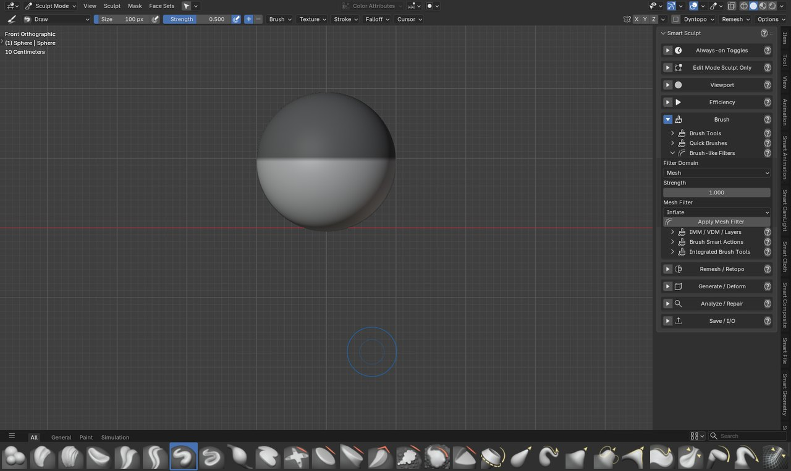
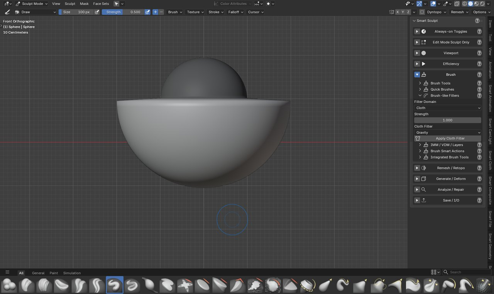
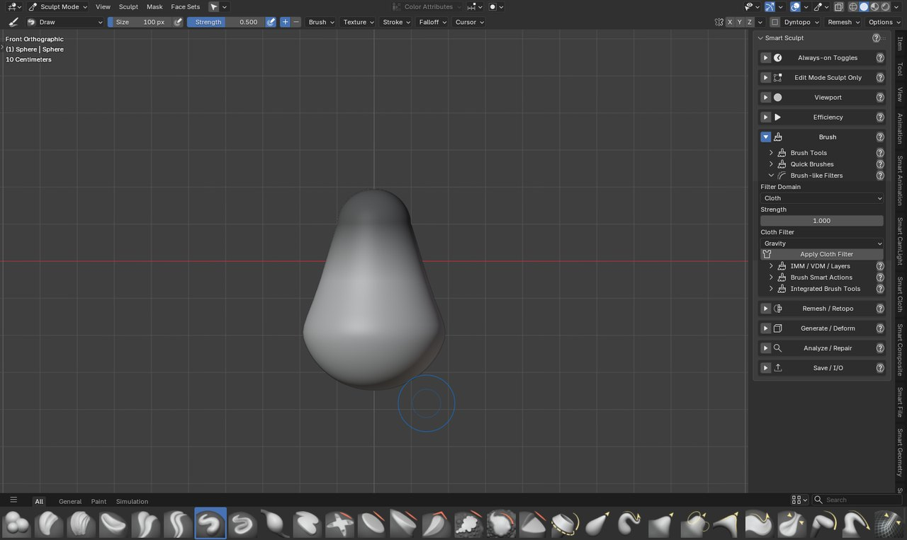
- In Sculpt Mode, open "Brush-like Filters" under "Brush".
- Leave "Filter Domain" set to "Mesh", set "Mesh Filter" to "Inflate", and click "Apply Mesh Filter".
- Switch "Filter Domain" to "Cloth", set "Cloth Filter" to "Gravity", and click "Apply Cloth Filter".
What to look for: The items and buttons in the panel switch to match the domain. On the sphere, only the unmasked lower half moves with either domain. With Mesh it inflates, and with Cloth it droops like cloth.
5-14. Remesh / Retopo
Rebuilds the faces of the mesh or changes their fineness. You can also cut out a part with masks or face sets.
Location"Smart Sculpt" panel > "Remesh / Retopo"
| Item | What it does |
|---|---|
| Remesh / Retopo | Runs the process selected in "Action" with "Run Selected Topology Action". You can choose and call here the same processes as the buttons in the boxes below. |
| Dynamic Topology | Set the "Mode" and "Detail" of Dynamic Topology (a mechanism that automatically makes faces finer only where you stroke with the brush), then make it usable with "Configure Dynamic Topology". "Detail Flood Fill" evens out the fineness of faces across the whole mesh. If you click it from Object Mode, it turns on Dynamic Topology and runs. If you click it from Sculpt Mode while Dynamic Topology is off, it stops with "Enable Dynamic Topology first." For a mesh with UVs, Dynamic Topology turns off when you leave Sculpt Mode. |
| Remesh | Select "Voxel" or "QuadriFlow" in "Remesh Mode" ("Voxel" at first). Set "Voxel Size" and click "Voxel Remesh" to rebuild the faces at nearly the same size. Raising "Adaptivity" reduces faces in flat areas to make it lighter (0 at first). "Run QuadriFlow" rebuilds with a number of quad faces close to "Quad Target Faces". |
| Multires | A mechanism with levels of fineness. Set "Action" and "Levels", then click "Run Multires". |
| Mask | When you select an item in "Action", the button below changes. With "Extract", "Extract Mask" turns the masked area into a separate object with thickness (thickness is "Extract Thickness"; the shape smoothing is "Extract Smooth", "Boundary Loop", and "Shrinkwrap"). With "Slice", "Mask Slice" cuts the masked area out into a separate object ("Fill Slice Holes" closes the cut). Other actions are run with "Run Mask Action". |
| Face Set | When you select an item in "Action", the button below changes. With "Extract", "Extract Face Set" turns the largest visible face set (the one with the most faces) into a new object (thickness is "Extract Thickness"). To extract a different face set, hide the others first and then click. Other actions are run with "Run Face Set Action", which divides faces into groups based on parts, materials, and so on. |
| Retopo / UV | "QuadriFlow" rebuilds with a number of quad faces close to "Target Faces". "Create Retopo Helper" creates helper objects for rebuilding faces ("Offset" and "Mirror"). "Auto UV Project" creates UVs (an unwrapped map for applying textures) automatically ("UV Margin" is the space between islands). |
| Polygroup / Flow | "Create Deep Polygroups" divides faces into "Polygroup Count" groups based on materials, seams, and so on. "Create Flow Remesh Guides" creates as many guide curves for the flow of faces as "Flow Guide Count" specifies. |
| Retopo Smart Actions / Integrated Surface Tools | "Retopo Smart Actions" is a box lined with buttons for the batch processes (Smart Actions) related to that section header. Click one to run that process all at once. It is closed at first. "Integrated Surface Tools" is a box with the button that opens the "Mask / Face Set Pie" and the "Selection to Mask" button. The pie has four buttons, "Mask Tools", "Face Sets and Trim", "Filters and Extract", and "Transform and Visibility", and clicking one opens a small window gathering those tools. If you open it outside Sculpt Mode, it shows only "Open this menu in Sculpt Mode." |
ExampleRebuild the Mesh with Evenly Sized Faces (Voxel Remesh)(demonstrated on Suzanne)
"Voxel Remesh" rebuilds the faces of the mesh into fine faces of nearly equal size. Use it as preparation before sculpting.
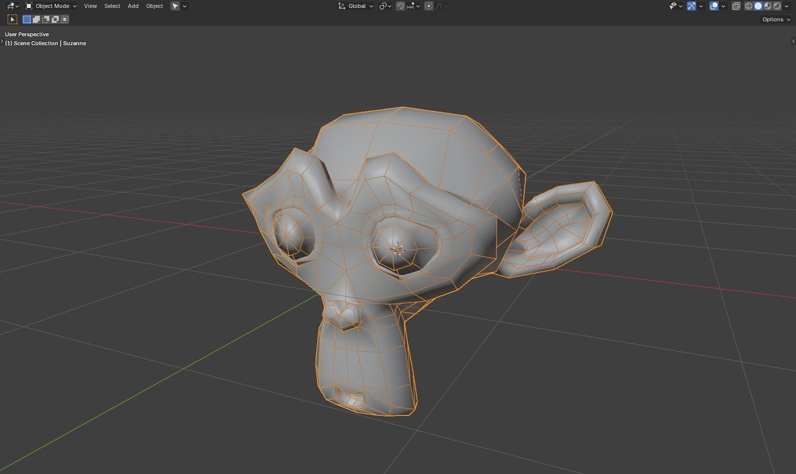
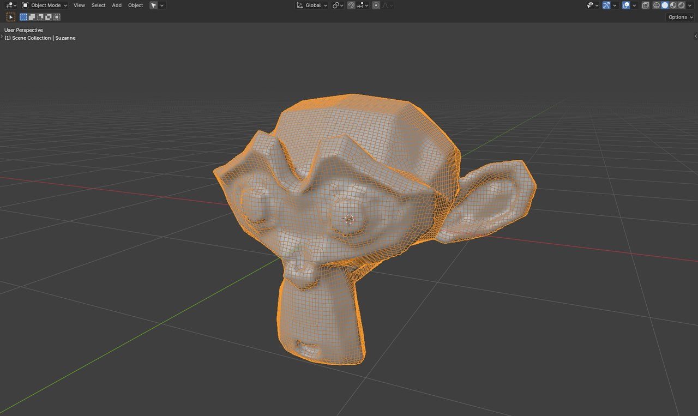
- Select Suzanne.
- Set "Voxel Size" in "Remesh" under "Remesh / Retopo".
- Click "Voxel Remesh".
What to look for: Faces of uneven sizes turn into a fine, uniform mesh pattern. The eyeballs, which were separate parts, also become one shape connected to the head (fine shapes around the eyes soften slightly).
ExampleExtract a Face Set into a Separate Object(demonstrated on a sphere divided into three face sets)
"Extract Face Set" turns the visible face set with the most faces into a new object with thickness. To extract a different face set, hide the others before clicking it.
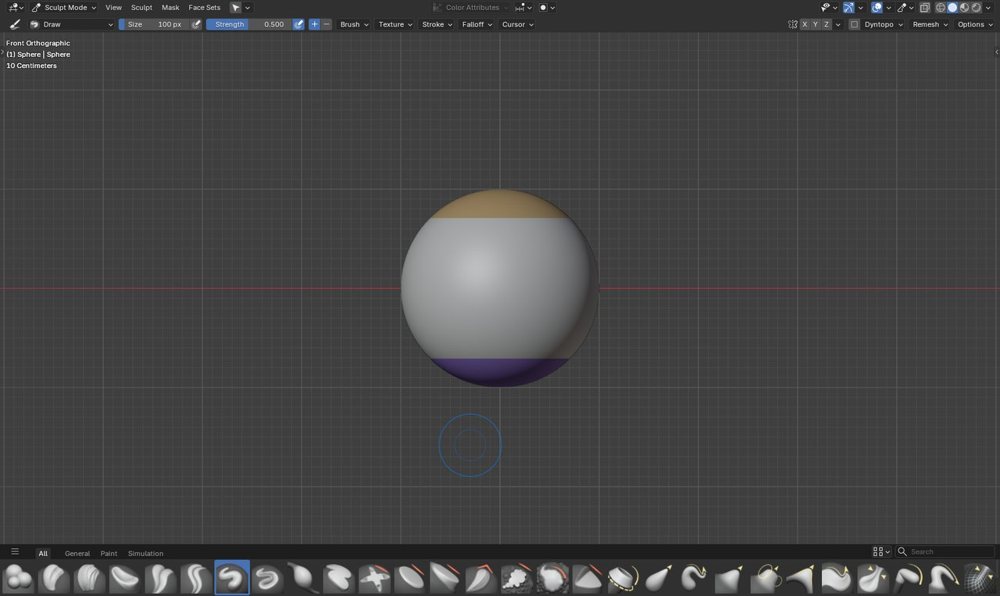
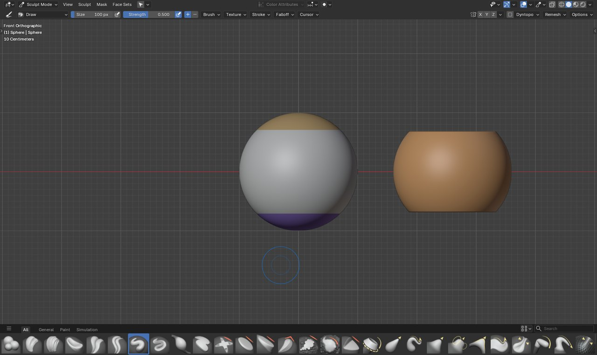
- Divide the sphere into three face sets beforehand.
- In "Face Sets" under "Remesh / Retopo", set "Action" to "Extract" and click "Extract Face Set". The middle band, which has the most faces, is extracted.
- To extract the top face set, hide the other face sets, then click "Extract Face Set" again.
What to look for: The extracted pieces have been moved beside the original sphere for display (when you click, they are created in the original location). With nothing hidden, the middle band is extracted; with the others hidden, the top cap is extracted. The original sphere remains.
5-15. Generate / Deform
The section header for creating new base shapes and parts.
Location"Smart Sculpt" panel > "Generate / Deform"
| Item | What it does |
|---|---|
| Build Launcher | Choose what to create in "Action", then create it with "Run Selected Build Action". |
| Primitive | Select a basic shape such as a sphere in "Primitive" ("Sphere" at first), set "Size" and "Boolean" ("None" at first), and click "Create Primitive". |
| Boolean / Cutter | "Run Selection Boolean" cuts away from or adds to the active mesh with the other selected meshes (choose with "Operation"; "Voxel Cleanup" tidies the faces of the result). "Create Rail Cutter" creates a long, thin cutter for carving grooves at the position of the 3D cursor ("Axis", "Rail Length", "Rail Width", "Rail Depth"). With "Boolean To Target" on, the active mesh is cut with the cutter. With "Apply" on, the result is finalized on the spot, and with "Delete Cutter" on, the cutter is removed after finalizing. "Bevel Cutter" rounds off the corners of the cutter. |
| Blockout Forms | "Create Sphere Chain" creates a base shape made of a chain of spheres, "Create Curve Tube" creates a tube shape, and "Create Anchor Bend" creates a helper for bending the shape. |
| Scatter / Procedural | "Detail Scatter" scatters the selected helper mesh over the surface of the active mesh. "Add Procedural Stack" adds fine bumps and dents with a modifier (a deformation mechanism that can be removed later). |
| ZModeler / ZModeler | Choose in "ZModeler Action" and use "Run ZModeler Helper" to help with shaping hard objects, such as chamfering edges. "Insert Multi Mesh" and "Create VDM Stamp" are also here. |
| Generate / Deform Smart Run | A box lined with buttons for the batch processes (Smart Actions) related to that section header. Click one to run that process all at once. It is closed at first. |
ExampleCarve a Groove into the Head (Create Rail Cutter)(demonstrated on Suzanne)
"Create Rail Cutter" creates a long, thin cutter and carves a groove into the active mesh.
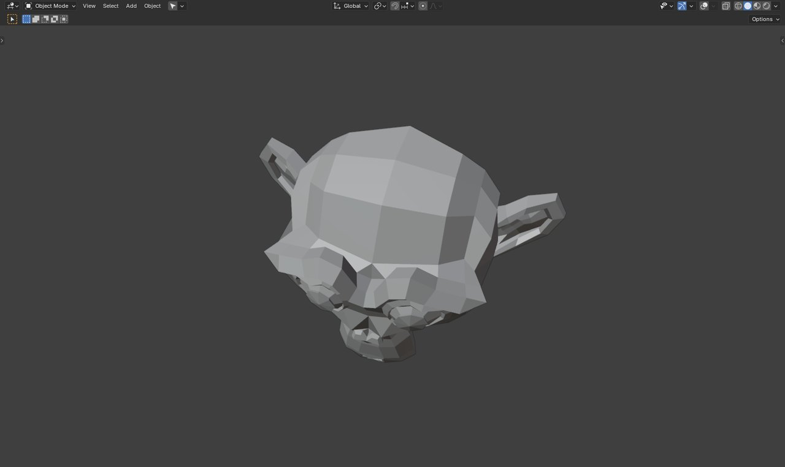
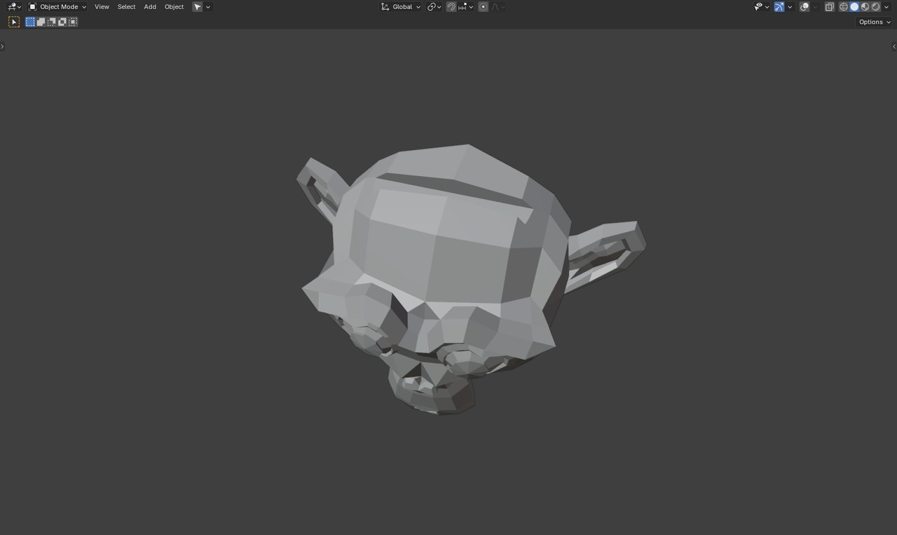
- Select Suzanne and place the 3D cursor on top of the head. The cutter is created at the position of the 3D cursor.
- In "Boolean / Cutters" under "Generate / Deform", set "Axis" to X, "Rail Length" to 2.6, "Rail Width" to 0.14, and "Rail Depth" to 0.2.
- Turn on "Boolean To Target", "Apply", and "Delete Cutter", and turn off "Bevel Cutter".
- Click "Create Rail Cutter".
What to look for: A straight groove running from left to right is carved on top of the head. If you turn off "Apply", the cutter is kept, so you can change the position of the groove later.
5-16. Analyze / Repair
Checks the mesh for problems and fixes common problems all at once.
Location"Smart Sculpt" panel > "Analyze / Repair"
| Item | What it does |
|---|---|
| Mesh Information | Shows the name, mode, and the number of vertices, edges, and faces of the selected mesh. |
| Analyze | Found inside "Analyze / Repair". Inspects the mesh and shows the problems found. |
| Fix | Applies the fixes chosen with the checkboxes below, all at once. |
| Report | Writes the inspection results to a Blender text (a document you can read in the Text Editor). |
| Apply Scale On Fix / Recalculate Normals / Delete Loose Geometry / Dissolve Degenerate Geometry / Merge Distance | Choose what "Fix" does. Only "Recalculate Normals" is on at first. Normals are the front direction of faces, loose geometry is vertices and edges not connected to anything, and degenerate geometry is faces and edges with almost no size. Turning on "Dissolve Degenerate Geometry" shows "Degenerate Threshold". |
| Live Mesh Readiness | A box that shows the score and the number of faces of the selected mesh, among other things. Before "Analyze", "Score" is "Not measured". Details are explained with the figure in the next section. |
| Selected Smart Action | A box that shows what the currently selected batch process (Smart Action) does. Run it with "Run Selected Smart Action". |
| Smart Safety / Quality | The "Quality" of batch processes, and safety settings such as "Preflight", "Adaptive Scale", "Snapshot", "Non-destructive First", and "Report". |
| Smart Action Parameters | Set the "Strength", "Density", "Count", "Segments", "Axis", "Voxel", "Multires", and "Target Faces" used by batch processes. |
| ZBrush Gap Coverage | A box where you set "HD Levels", "Detail Strength", and "Polygroup Count" and use "Create HD Microtile Stack", "Create Deep Polygroups", "Run ZBrush-Class Pipeline", and "Create Coverage Report". |
| Analyze / Repair Smart Run | A box lined with buttons for the batch processes (Smart Actions) related to that section header. Click one to run that process all at once. It is closed at first. |
ExampleFix Flipped Faces All at Once ("Fix" in Analyze / Repair)(demonstrated on Suzanne)
"Fix" runs the fixes selected with the checkboxes (at first, "Recalculate Normals") all at once and makes the directions of flipped faces consistent.
- Select Suzanne.
- In "Analyze / Repair", check that "Recalculate Normals" is turned on.
- Click "Fix".
- If you turn on "Face Orientation" in the 3D Viewport overlays, flipped faces are shown in red, so you can compare them before and after the fix.
What to look for: In the face orientation display (flipped faces in red), the red faces that appeared on the right half disappear, showing that the directions are now consistent.
5-17. Live Mesh Readiness (inside Analyze / Repair)
A box that checks the state of the mesh with a score before heavy processing. When you click "Analyze", the score appears as in the figure below.
Location"Smart Sculpt" panel > "Analyze / Repair" > "Live Mesh Readiness"
| Item | What it does |
|---|---|
| Score | A guide out of 100. It shows "Not measured" until you run "Analyze" or a Smart Action. |
| Faces / Quad / Risk Edges | "Faces" is the number of faces, "Quad" is the ratio of quad faces (1.00 means all quads), and "Risk Edges" is the number of edges likely to cause problems. "Quad" and "Risk Edges" are shown after the score appears. |
| UV / Shape Layers | "UV" is the number of UVs, and "Shape Layers" is the number of shape keys (a mechanism that stores differences in shape). |
| Apex Route | Shows the name of the action recommended for that mesh. |
| Apex Autopilot Pass | Examines the state of the mesh and runs the Smart Action that fits. |
5-18. Save / I/O
The section header for keeping and restoring intermediate shapes, exchanging data with external tools, and cleaning up unneeded data. Settings (Preferences) are also inside it.
Location"Smart Sculpt" panel > "Save / I/O"
| Item | What it does |
|---|---|
| Snapshot | When you select an item in "Action", the button below changes. "Save Snapshot" keeps the current shape. "Restore Snapshot" brings back the one selected in the list, "Preview Snapshot" compares them side by side (end it with "Clear snapshot preview"), and "Delete Snapshot" removes it. |
| Recovery | "Recovery Backups" is on from the start. While on, one backup per object is created automatically before remeshing, booleans, fixes, UV overwrites, slicing, and so on. When "Action" is "Restore" (the starting value), click "Restore Recovery Backup" to go back. When it is "Delete", "Clear Recovery Backup" removes the backup. |
| Shape Layers | Uses shape keys as sculpt layers. Select "Create", "Duplicate", "Delete", or "Drive" in "Action" and run it with the button below. "Drive" is a setting that moves the strength of a shape with the motion of a bone; set "Driver Bone", "Channel", "Min", and "Max". |
| I/O / Cleanup | When you select "Export", "Import Latest", or "Cleanup" in "Action", the button below changes. Set "Format", "Scope", and "Folder", then use "Export Exchange" and "Import Latest Exchange". With "Timestamped Names" on, the date and time are added to file names. "Cleanup Generated Data" clears the helper data this add-on created ("Cleanup Snapshots Too" includes snapshots). |
| 3D Layer / Morph Target / Report | "Run 3D Layer Action" and "Run Morph Target Action" handle shape layers that use shape keys. "Create ZBrush Gap Report" writes out the inspection results. |
| Preferences | The settings of this add-on. "Runtime Status", which shows the loading state, and "Tool Sections", the settings for each tool, are lined up one after the other. |
| Save / I/O Smart Run | A box lined with buttons for the batch processes (Smart Actions) related to that section header. Click one to run that process all at once. It is closed at first. |
| Scene Settings | A box that shows the settings saved in this scene, grouped by area. It is closed at first. |
ExampleKeep the Shape Before Remeshing and Restore It Later (Snapshots)(demonstrated on Suzanne)
If you keep the current shape with "Save Snapshot", you can go back with "Restore Snapshot" even after a big change.

- Select Suzanne, and in "Snapshots" under "Save / I/O", click "Save Snapshot".
- Click "Voxel Remesh" in "Remesh / Retopo".
- When you want to go back, in Object Mode, set "Action" in "Snapshots" to Restore, select the snapshot in the list, and click "Restore Snapshot".
What to look for: Look at the mesh pattern. The finer mesh pattern created by remeshing returns to the original mesh pattern when you restore.
6. Common Tasks
Save the Current Shape Before a Big Change
Make a backup before operations that are hard to undo, such as remeshing.
- Select the mesh you will sculpt.
- Open "Save / I/O", then open "Snapshot".
- Make sure "Action" is set to Save (it is Save at first).
- Click "Save Snapshot".
- When you want to go back, in Object Mode set "Action" to Restore, select the saved one in the list, and click "Restore Snapshot".
Result: You can return to the shape at the time you saved.
Even Out the Face Fineness (Voxel Remesh)
Rebuild stretched or crowded faces to about the same size.
- First, save a snapshot using the steps above.
- Open "Remesh / Retopo", then open "Remesh".
- Set "Voxel Size". The smaller it is, the finer and heavier the faces become.
- Click "Voxel Remesh".
Result: The whole mesh is rebuilt with faces of about the same size.
Save and Recall a Favorite Brush
Make your favorite brush quick to recall.
- In Sculpt Mode, select the brush you want to save.
- Open "Brush", then open "Brush Tools".
- Choose one of 1 to 3 in "Favorite Slot".
- Click "Save".
- When you want to use it, select the same slot and click "Recall".
Result: You can go back to the brush in the selected slot with a single button.
Check and Fix Mesh Problems
Clear up mesh problems before exporting or the next task.
- Select the mesh and switch to Object Mode.
- Open the "Analyze / Repair" section header, then open the "Analyze / Repair" box inside it.
- Click "Analyze" and check the problems found.
- Turn on only the items you want to fix (such as "Recalculate Normals" and "Delete Loose Geometry").
- Click "Fix". If you want to keep a record, click "Report".
Result: The problems in the selected items are fixed.
Move the Shape with a Brush in Edit Mode
Build up or smooth the stroked area without switching modes.
- Select the mesh and enter Mesh Edit Mode.
- Make sure "Enabled" in "Edit Mode Sculpt Only" is on.
- Select a brush in "Brush" under "Standard Sculpt Brush Assets".
- Click "Start Direct Brush" and stroke over the mesh in the 3D Viewport with the left button.
- To finish, press Esc or the right button.
Result: The shape of the stroked area changes while you stay in Edit Mode.
7. Troubleshooting
- I cannot click the buttons of "Edit Mode Sculpt Only".
- Check that "Enabled" inside the section header is on. Also check that you have selected a mesh and entered Mesh Edit Mode.
- I want to call it up with a shortcut key.
- This add-on does not register shortcuts automatically. Copy the ID from "Keymap Registration IDs" in "Edit Mode Sculpt Only" and register it yourself in the keymap in Preferences.
- Closed section headers and settings revert when I reopen Blender.
- Check that "N-panel State Save" in "Always-on Toggle" is on. While it is on, every change is saved immediately and restored the next time Blender starts.
- The list and detailed diagnostics do not appear in "Active Target".
- Outside Object Mode, the object data list and detailed diagnostics are temporarily paused. They appear again when you return to Object Mode.
- The shape broke down after remeshing.
- If you saved a snapshot beforehand, you can go back with "Restore Snapshot". If "Recovery Backups" in "Recovery" is on (on from the start), you can also return to the shape just before by clicking "Restore Recovery Backup" with "Action" in "Recovery" left at Restore (the starting value).
For problems common to every add-on, such as an add-on not appearing or the interface language not changing, see "Troubleshooting" in the SmartTools Overall Specification.
8. Glossary
- Sculpt
- Shaping a mesh by stroking it with brushes, like kneading clay.
- Mask
- A mark placed on areas you do not want brushes or operations to move.
- Face Set
- Faces divided into several groups. Each group is told apart by color.
- Remesh
- Rebuilding the faces of a mesh to even out the size and layout of the faces.
- Dynamic Topology
- A mechanism that automatically makes faces finer only where you stroke with the brush.
- Multires
- A mechanism that gives the same mesh levels of fineness, from coarse to fine.
- Snapshot
- A backup that keeps an intermediate shape inside the object. You can go back to it or compare against it later.
- Shape Keys
- A mechanism that stores the difference from the original shape so you can blend or switch it later.
- Falloff
- How the effect weakens from the center of the brush outward.
- Boolean
- An operation that overlaps two shapes and cuts away, adds, or keeps only the overlapping part.
- Pie Menu
- A menu that appears arranged in a circle around the cursor.
9. Appendix: Version, Checksum and Limitations
| Add-on | SmartSculpt Suite (smart_sculpt_suite) |
|---|---|
| Version | 1.0.0 |
| ZIP | SmartSculptSuite_1.0.0.zip |
| Size | 11,029,927 bytes |
| SHA256 | 434e91f4c7f451c0122dbb8207fcb42185f4f080df6134410099986253bf9d11 |
Limitations and Notes
- Shortcut keys are not registered automatically. Register the ones you need in the keymap yourself.
- The tools of "Edit Mode Sculpt Only" work only in Mesh Edit Mode.
- Outside Object Mode, the object data list and detailed diagnostics are temporarily paused.
- Remeshing, booleans, slicing, and similar operations rebuild the original faces. Keep a backup first with a snapshot or a recovery backup.
SmartSculpt Suite Manual v1.0.0 / Built 2026-11-19